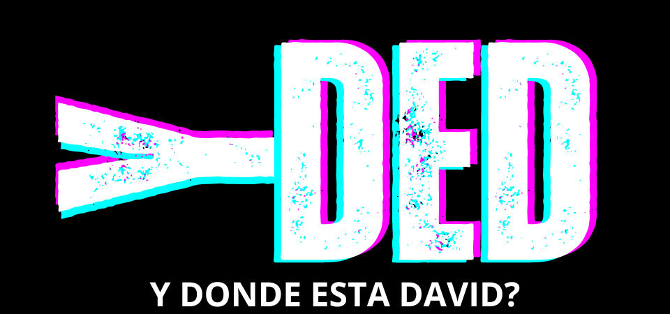
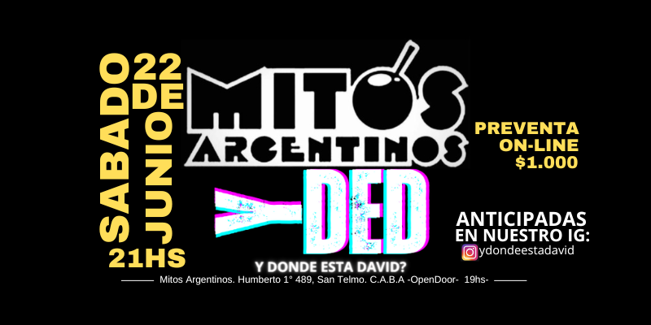

PROXIMAS FECHAS

GALERIA
LA BANDA
Oriundos de zona sur, Quilmes, y luego de haber formado parte de varias bandas pasadas, David Soria y los Hermanos Matias y Oscar Anchabal deciden volver a juntarse para formar una nueva banda. Luego de una larga búsqueda integran a Emiliano Tarnoski en la guitarra y empiezan los primeros ensayos y presentaciones. A los pocos meses conocen a Tadeo Roda quien se une tocando el teclado y la 2da Viola.
NOSOTROS